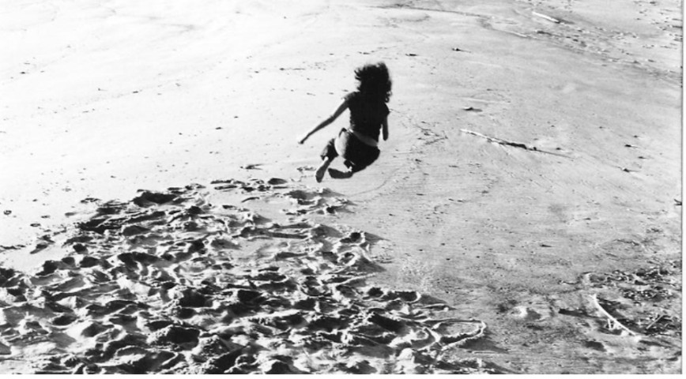
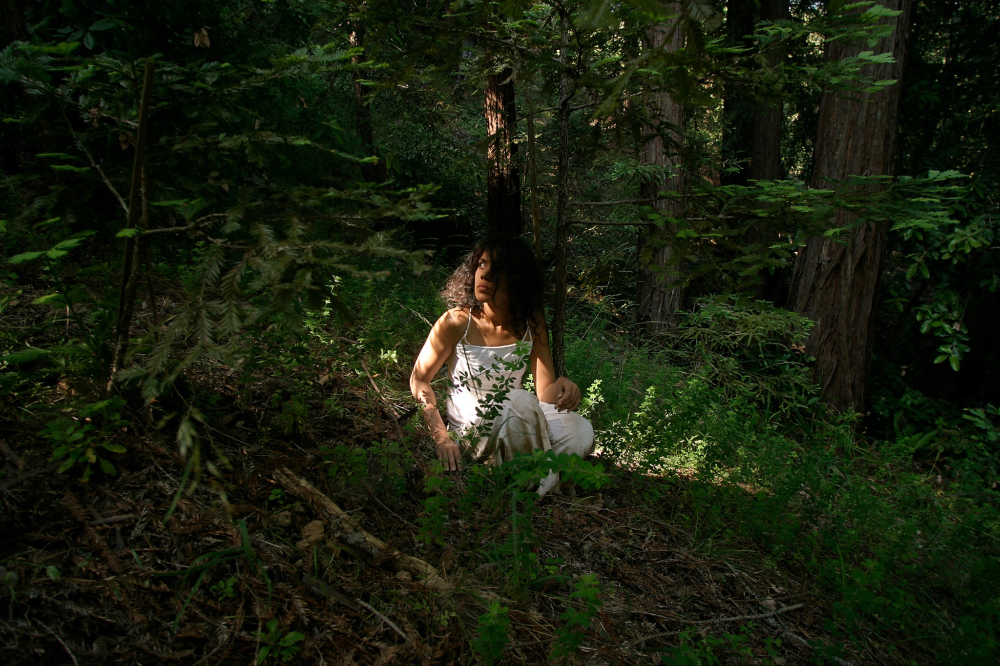
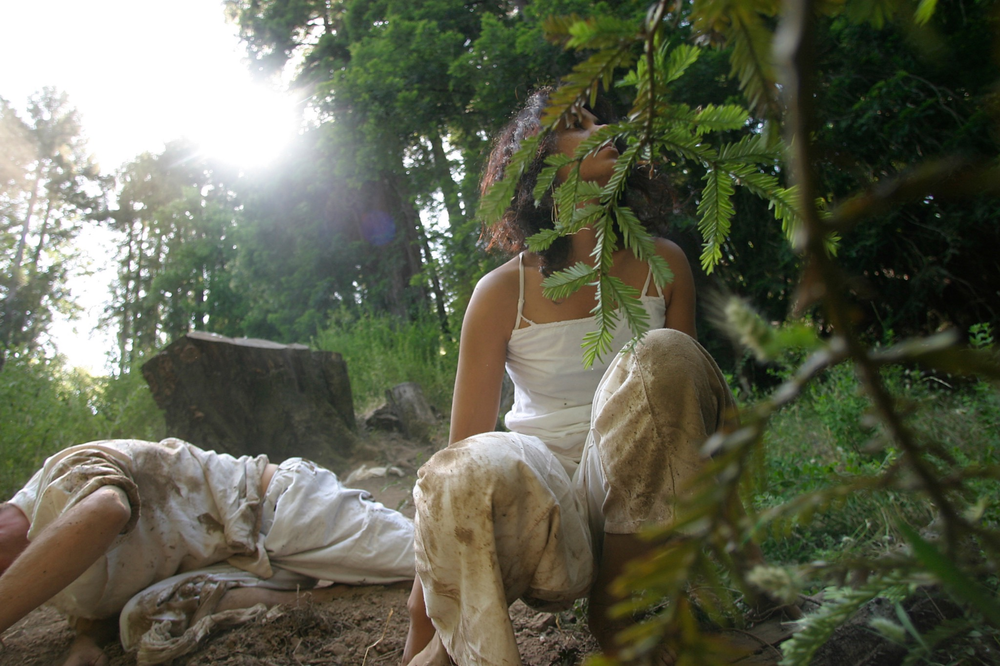
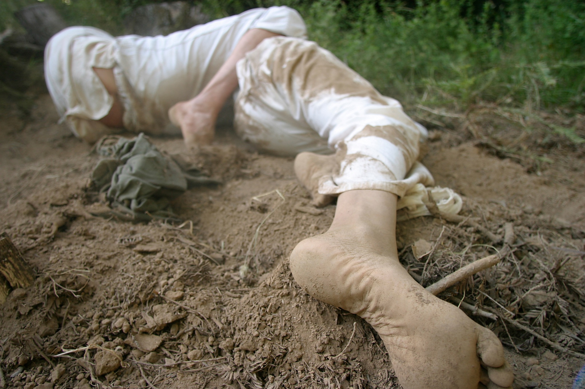
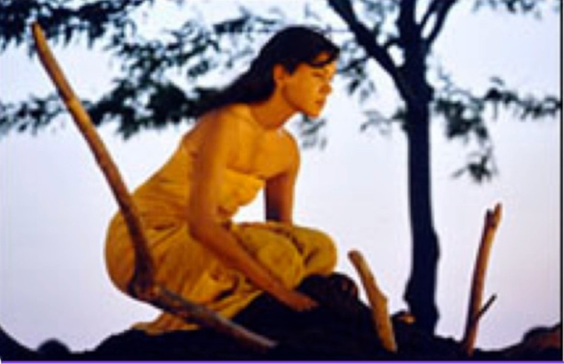
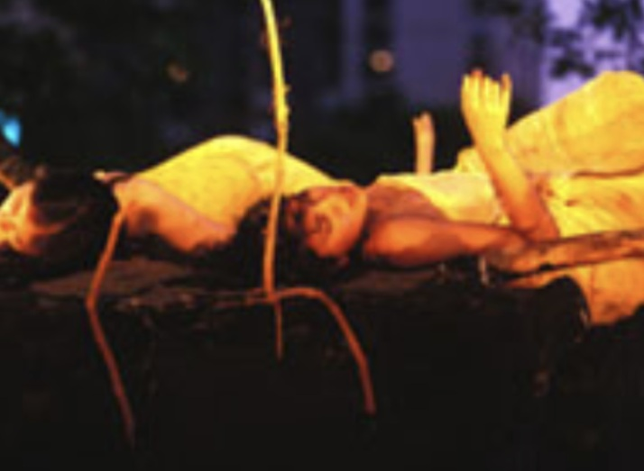
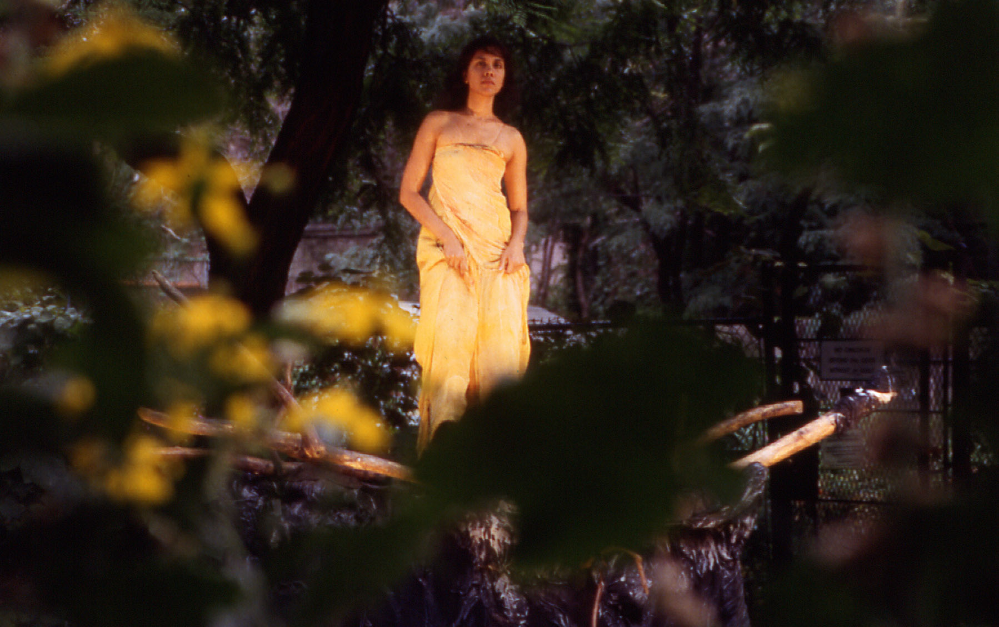

Interdisciplinary Researcher
Our increasingly complex and uncertain world requires a plurality of ways of knowing. My work explores this plurality through three forms: Artistic Practice, where I learned how knowledge lives in body and in place; Research, where I developed that knowledge with other thinkers into a philosophy of the porous, relational human; and LIMNS, where I brought these ideas into conversation with AI.



Photographs: Rick Chapman
Research
Embodied Ecologies
Embodied inquirySituated practiceEcological relations
I am a PhD candidate in Environmental Studies, working at the intersection of artistic practice, embodied ecologies, posthumanism, and ecological thought.
My research explores how avant-garde movement practices unsettle dominant Western understandings of the bounded and discrete human, to uncover a relational, porous, and fluid understanding of body and world.
Alongside my dissertation, I have been developing LIMNS, an AI project that grew out of my research. This process has opened questions about what will count as knowledge, and what embodied, relational, and ecological understandings might bring to emerging research in AI and beyond.
LIMNS
Human philosophy about being alive
Write a journal entry, a thought... anything.
Two thinkers will rise to widen your moment.
LIMNS is an app that grew out of my PhD research—a daily practice of human philosophy. Write a short journal entry, a thought, or a question.
LIMNS brings two thinkers from the breadth of human thought whose ideas rhyme with your moment, adding texture and illuminating how we experience the world. An artwork arises beside them: an aesthetic reflection, another way of sensing this meeting.
Explore LIMNS →Artistic Practice
Practices and Lineages
Body WeatherAnna Halprin and Sea Ranch Collective Noguchi Taiso



Photos: C. Conover · K. M. Ferron · I. Sygoda
For over two decades, I’ve trained and performed internationally in avant-garde dance practices, including in Paris, New York, Los Angeles, San Francisco, and rural Japan. My work spans solo and collaborative performances in natural environments, on stage, and in film.
My artistic practice is the foundation of my research. It is also an ongoing site of inquiry into how we come to understand our world through embodiment, place, and relationality.